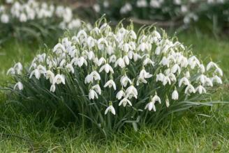

У наш час як нiколи потрiбно берегти нашу природу. Внаслiдок дiяльностi людини було винищино багато рослин та тварин, та iснують рослини, якi попри свою природню рiдкiсть залишилися не винищиними. Часто такi рослини надзвичайно складно знайти чи навiть побачити.
На моему сайтi є невеличка добiрка надзвичайно рiдкiсних рослин з усього свiту
